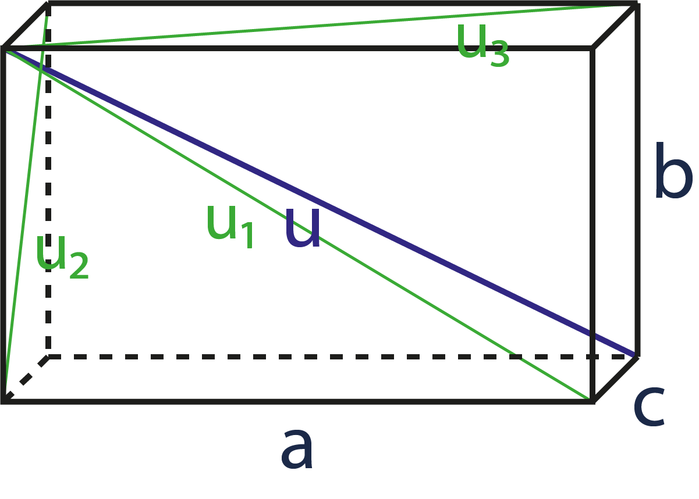

Povrch a objem kvádru
Vlastnosti kvádru

Vzorečky
Povrch S = 2 * (ab + ac + bc)
Objem V = abc
Vysvětlivky
a; b; c = označení strany podstavy
V = objem
S = povrch
Úhlopříčka spojuje dva různé vrcholy, které spolu nesousedí.
?
Kalkulace
Návod pro použití online kalkulačky pro výpočet objemu, nebo povrchu kvádru:
- Zadejte hodnoty do políček.
- V rozbalovacím menu zvolte jednotky, ve kterých chcete počítat.
- Klikněte na tlačítko Spočítat.
- Pro smazání historie výsledků stiskněte tlačítko Smazat historii počítání.